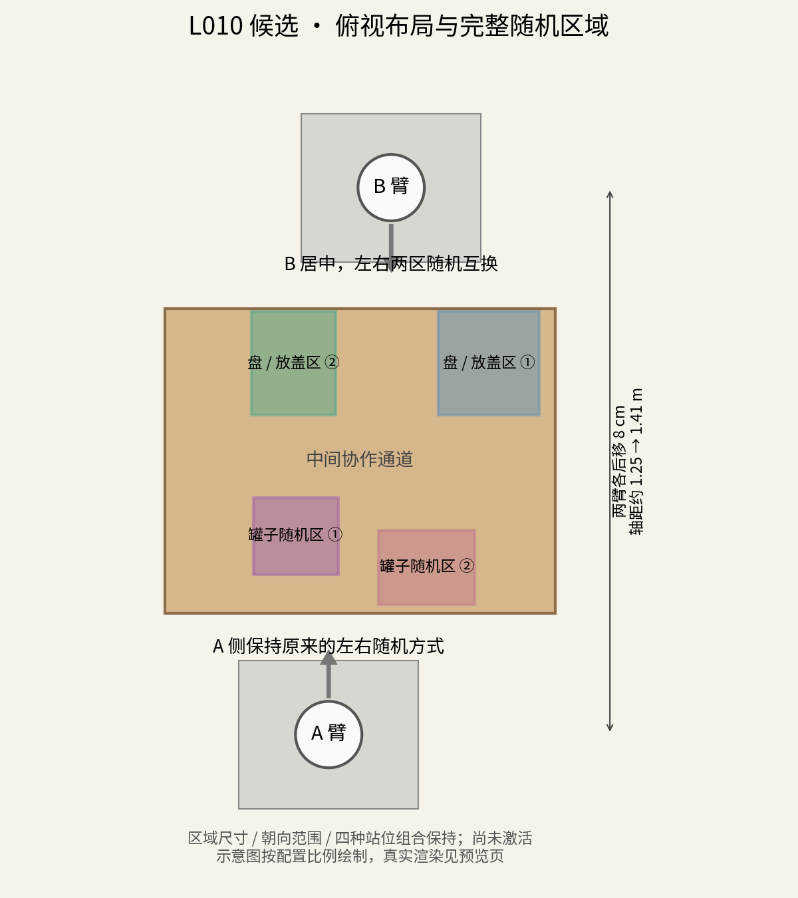
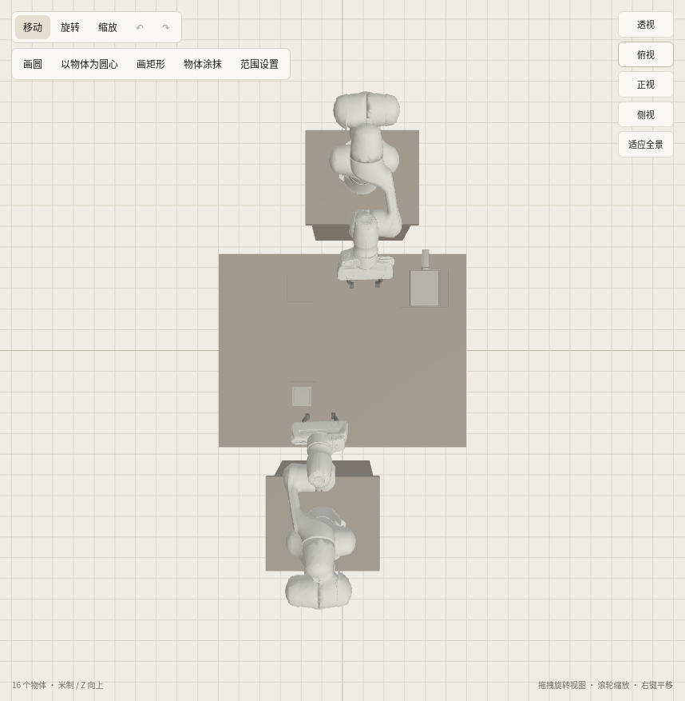
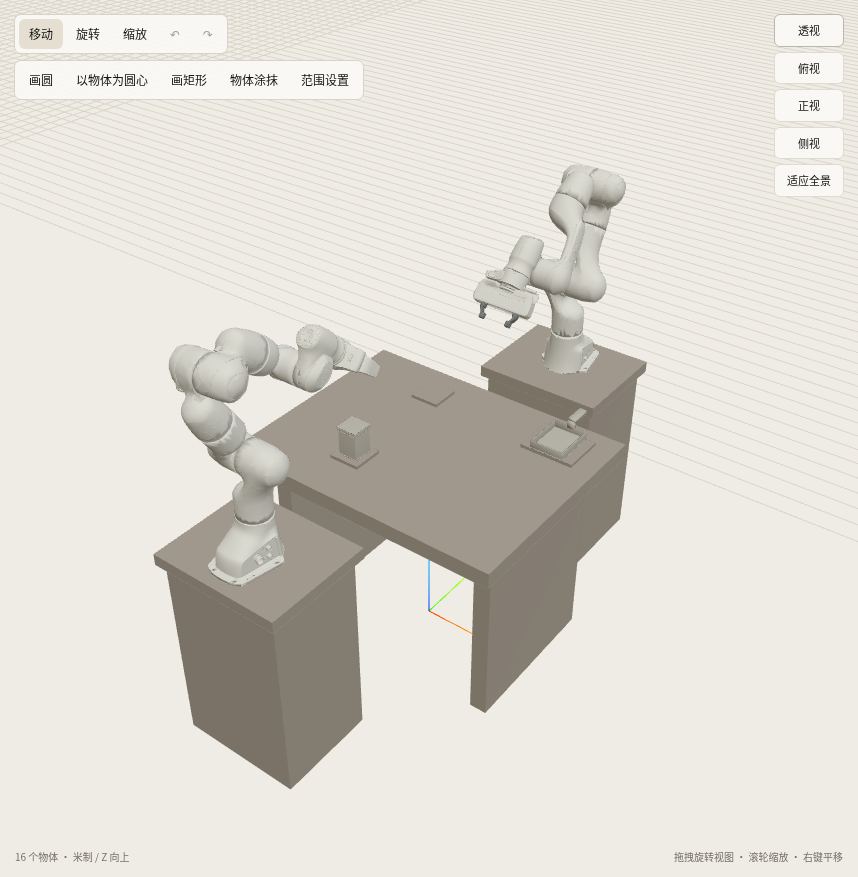

A侧保留左右两区随机刷罐。
B侧两个区改为同样的前后距离、左右并排；盘子和放盖位依旧随机互换，B臂位于两区中间。
两臂各后移8厘米，基座轴距约从1.25米增至1.41米。四个随机区尺寸、朝向范围和四种站位组合保持。
左图是按配置绘制的示意图；下方为同一候选的真实仿真初始化截图。全景中B在画面左侧、A在右侧；“左右区”以各自机器人朝向为准。
四种组合初始化均稳定；边界检查：16组均在桌面内，B侧取盘/放盖与中间协作目标静态可达；A侧同一最远角在两种B互换组合中抓前位置未通过（14/16），保留该问题，未缩随机区。完整路径与任务物理尚待复验。尚未验证执行速度，不宣称已经更快。

